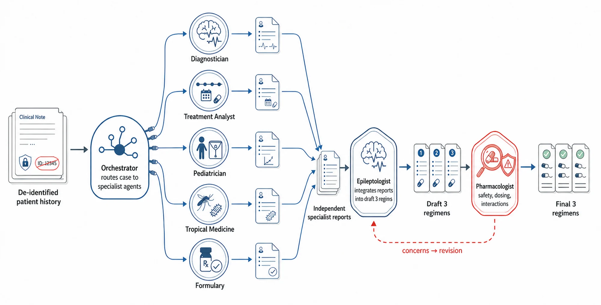
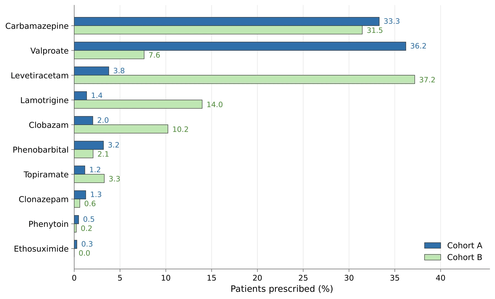
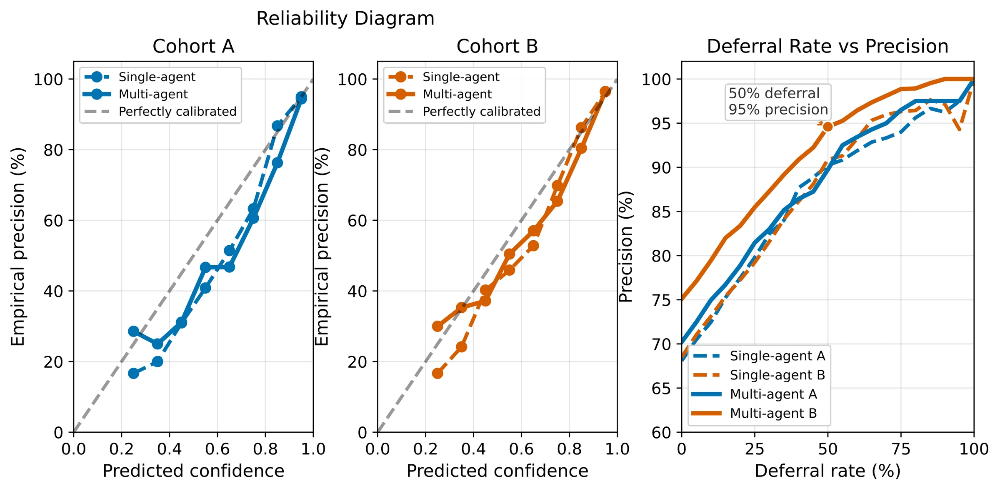

![MANANA workflow. A: the Predictor proposes three regimens per patient, the Inspector compares them with the physician prescription and writes candidate learnings into a shared buffer, and the Architect consolidates recurring signals into the next memory state, either a Single rule list or a Multi specialist population. B: at deployment, the memory trajectory is averaged with Bayesian prompt averaging into regimen probabilities; high-confidence cases assist the clinician and low-confidence cases are referred to a specialist.](assets/manana_diagram.webp)
01 Overview
A decision-support system for epilepsy care has to adapt to local practice and know when to step back.
The wrong prior, not missing knowledge
General-purpose LLMs reach non-trivial agreement with Ugandan physicians' anti-seizure prescriptions. Neurologists who reviewed the reasoning traces found errors that follow Western prescribing defaults rather than local practice.
Learn local practice from 50 patients
Manana turns prescription errors into an auditable prompt memory. No clinician writes the rules and the model weights never change. Lessons enter memory only when several patients support them.
Recommend, or defer
Bayesian prompt averaging (BPA) treats the memory states from learning as an ensemble. Its posterior gives each visit a confidence score, and the least certain visits are routed to scarce specialists.
Abstract
Abstract
Specialist epilepsy expertise is scarce in resource-constrained settings, creating a pressing need for decision-support tools that help frontline clinicians manage longitudinal treatment. Such systems must adapt to local prescribing practices and recognize when specialist review is needed. Most public medical AI benchmarks focus on high-income clinical settings, leaving prescribing practices, medication availability, and follow-up patterns in low-resource contexts largely unrepresented. We study this problem through a multidisciplinary collaboration focused on pediatric epilepsy care in Uganda. The task is to predict anti-seizure medication regimens from longitudinal unstructured notes collected by local clinicians across serial visits. General-purpose language models achieve non-trivial agreement with physician prescriptions, but neurologists' review of model reasoning traces shows that their errors reflect Western prescribing defaults that do not account for local clinical practices. We introduce Manana, a non-parametric prompt-learning framework that learns how to reason about local prescribing decisions from a small patient-level training set. Manana turns observed prescription errors into an auditable prompt memory, instantiated in single-agent and multi-agent variants, and outperforms classical ML models, direct LLM prompting, and prompt-optimization baselines across two independently collected Ugandan cohorts. The sequence of prompts produced during learning also provides a basis for estimating uncertainty. We exploit this through Bayesian prompt averaging (BPA), which combines predictions across the learned prompt trajectory to produce prescription likelihoods and a deferral signal. Using the same Manana-Multi trajectory, BPA improves top-1 physician-regimen agreement from 66% to 70% on Cohort A and from 73% to 75% on Cohort B while preserving top-3 coverage. More consequentially, it enables clinically meaningful selective prediction: the system can auto-handle the most confident half of cases at 95% precision, or the most confident quarter at 99% precision, while deferring lower-confidence cases for specialist review. These results suggest a path toward locally adapted clinical LLM systems that learn from limited site-specific data and reserve scarce specialist attention for the cases where uncertainty is highest.
02 Why a general LLM is not enough
Neurologists audited the model's reasoning. The errors were systematic.
We deliberately enriched the audit set for model errors. Two pediatric neurologists independently reviewed a single-agent LLM's reasoning on 20 Cohort A patients (60 visits). They often accepted the prediction while flagging a recurring gap in how the model reasoned about local practice.
Timeline drift
Treats old medications as active or misses changes between visits.
Treatment trackingSeizure classification
Follows surface descriptions and misses the focal versus generalized distinction.
DiagnosticsAge and weight drift
Carries forward outdated pediatric context and misses whether doses are adequate.
Pediatric dosingDrug-availability blindness
Recommends drugs with limited local access and underuses formulary drugs.
Local formularyMonotherapy inertia
Avoids escalation when the physician's trajectory supports polytherapy.
Escalation logicUnsafe combinations
Misses sedation and interaction risks in multi-drug regimens.
Safety reviewInfection as trigger
Treats every breakthrough seizure as a failure of the anti-seizure medication.
Tropical differential“VPA is more commonly available than LEV and provided by the national formulary, and as such more frequently prescribed.”Neurologist 1, audit comment (verbatim excerpt)
From audit to Consilium
We first encoded each failure mode as a specialist lens in Consilium, a hand-built council of doctor agents. An epileptologist agent synthesizes the specialists' reports, and a pharmacologist agent reviews the result for safety. Consilium is a strong reference system, but it depends on specialist feedback, does not learn from site data, and gives no confidence score.
The question that drives Manana: can an LLM discover equally useful corrections from patient notes and prescriptions alone, with no doctor in the loop?

03 How Manana learns
Three roles, one rule: only recurring lessons become memory.
All three roles are calls to the same frozen LLM with different prompts. Learning runs for 15 rounds over 150 training visits from 50 patients. It produces a trajectory of readable memory states m0, m1, …, mT, and no gradients are involved.
Predictor
Reads the visit's notes, prior visits, and prior regimens, conditioned on the current memory. Returns three candidate regimens over the clinic's 10 anti-seizure medications.
Inspector
Compares the candidates with the physician's prescription. It writes a structured report and proposes one candidate learning grounded in the note.
Architect
Reads the cumulative evidence buffer and the current batch reports, then makes a constrained update to memory.
The quorum rule is the unit of update. Candidate learnings collect in an append-only evidence buffer that records which visit produced each one. A lesson enters memory only when candidates from at least two distinct visits support it. TextGrad rewrites a whole prompt from per-batch textual gradients. Manana separates diagnosing an error from committing a lesson, so one unusual patient cannot rewrite the prescribing policy.
Manana-Single
The Architect may append one rule per round, synthesized from recurring buffer evidence, or leave the list unchanged.
Manana-Multi
Each specialist extracts one clinical signal for the Predictor and never prescribes. The Architect can spawn, edit, or prune specialists, with up to two actions per round and a target budget of five specialists.
Bayesian prompt averaging
Each memory state in the trajectory is a different regimen predictor. BPA keeps the K = 5 states with the highest validation marginal likelihood. It weights them by posterior support, using a Beta-Binomial likelihood over where the physician's regimen falls among the three candidates, with temperature τ = 5. It then merges their candidates into a single distribution over regimens.
04 What each method learns
Same supervision, very different artifacts.
Every method sees only patient notes and the physician's prescribed drug set. The text each one learns shows why Manana generalizes. The artifacts below are representative of high-performing runs and are copied verbatim from the released repository.
Detailed prose, weak grounding
The result reads like a guideline document. It commits to dose ranges, lab schedules, formulations, pill-burden caps, stocking assumptions, and a cost hierarchy, none of which can be recovered from a prescribed drug set.
- Primary generalized tonic-clonic seizures in Ugandan children are treated first-line with valproate monotherapy; dose 15-30 mg/kg/day, max 60 mg/kg/day, with baseline liver-function tests before any dose change and repeat testing at 2 weeks then every 3 months.
- For children >15 kg use 200 mg valproate tablets; for <=15 kg use 100 mg/5 mL syrup, keeping volume <=5 mL per dose.
- Focal-onset seizures are treated first-line with carbamazepine; start 5-10 mg/kg/day divided BID, titrate to <=30 mg/kg/day, and limit to <=15 mg/kg/day in children with generalized hypertonia or cerebral palsy.
- Levetiracetam is a modest-penalty adjunct after documented valproate failure, defined as >=2 breakthrough seizures in 30 days on therapeutic valproate; start 0.2 mg/kg/day BID, titrate to 5-10 mg/kg/day, and obtain renal function before initiation.
- Pill-burden constraint: total tablets per dose <=2 and <=4 tablets per day; liquid formulations count as a single dose; exceed only for life-threatening seizure frequency.
- Resource availability: valproate tablets stocked nationwide; syrup limited to referral hospitals; carbamazepine tablets widely available; levetiracetam often stock-out at peripheral clinics; phenobarbital universally stocked.
- Cost hierarchy: zero-penalty agents are valproate, carbamazepine, and phenobarbital; modest-penalty agents are levetiracetam and lamotrigine; high-penalty agents are clobazam, clonazepam, ethosuximide, phenytoin, and topiramate.
- Monitoring schedule: valproate requires baseline LFT, repeat 2 weeks after change, then every 3 months; carbamazepine requires trough level after any dose increase >5 mg/kg/day or after breakthrough; phenobarbital requires platelet count and LFT every 6 months.
Useful but generic
The lessons are plausible prescribing heuristics: continue current drugs, prefer locally common first-line agents, dose by weight. They stay at the level of generic best practice and never name the drug- or seizure-specific local patterns behind cohort-level errors.
- When several guideline-appropriate first-line drugs are suitable for initiation, select the medication most commonly used locally, considering safety, patient-specific factors, and documented physician preference.
- When no current antiepileptic medication is documented, choose the appropriate first-line drug based on seizure type, epilepsy classification, age-specific safety, weight-based dosing, and the locally endorsed treatment hierarchy: formulary, cost, and common prescribing patterns.
- When multiple drug actions are clinically justified, such as adverse effect, ineffectiveness, or need for addition, combine all necessary actions in a single option; otherwise limit each option to one clearly justified action.
- Prioritize continuation of a drug that is already prescribed unless the notes explicitly indicate ineffectiveness, adverse effects, or a need for change.
- For pediatric patients, calculate the antiepileptic dose using the most recent weight measurement, apply the recommended mg/kg range, and round to the nearest available tablet or syrup strength.
- Before stopping a medication, verify that it has been initiated for at least 4 weeks without reported adverse effects or lack of efficacy; recent initiation without issues warrants continuation unless the notes explicitly advise otherwise.
A sharper interface, no clinical memory
GEPA improves how the task is posed: it parses explicit directives, enforces the output format, checks dose adequacy, and guards against unnecessary additions. It has no place where cross-patient lessons can build up over rounds.
Task: Predict the antiepileptic drug (ASM) prescription for a patient seen at the
Uganda epilepsy clinic, based solely on the free-text clinical notes provided.
The output must be three ranked regimen options, each showing the drug name
followed by an action (continue, start, or stop). The reasoning must be brief.
INPUT FORMAT
The only input the model will receive is a single string called clinical_notes.
The notes contain:
- Patient demographics (age, sex, weight, etc.)
- Clinical history, seizure description, examination findings
- Investigation results (EEG, imaging)
- A "Current drug regimen" section that may list one or more ASMs, sometimes with
dosing instructions or a date of initiation.
- A separate "Prescription" or "Plan" section that may contain explicit instructions
such as "start carbamazepine", "stop valproate", "step sodium valproate to 500 mg
BD", "increase dose", "add clobazam", etc.
OUTPUT FORMAT
The assistant must return exactly three options in the order option_1, option_2,
option_3. Each option is a comma-separated list of <drug>:<action> pairs.
- <drug> must be one of the allowed drug names exactly as written:
carbamazepine, clobazam, clonazepam, ethosuximide, lamotrigine, levetiracetam,
phenobarbital, phenytoin, topiramate, valproate
- <action> must be one of: continue, start, stop
No other text, punctuation, or formatting is allowed.
Example:
option_1: valproate:continue
option_2: valproate:continue, levetiracetam:start
option_3: valproate:stop, lamotrigine:start
After the three options, include a short reasoning paragraph (1-2 sentences) that
explains why the options were chosen. The reasoning must not list doses, dates, or
any information that is not needed for the decision.
GENERAL PRINCIPLES FOR GENERATING THE REGIMENS
1. Follow explicit prescription language.
- "start X", "add X", or "initiate X" -> <drug>:start
- "stop X", "discontinue X", or "withdraw X" -> <drug>:stop
- "continue X", "maintain X", or the drug appears in the "Current drug regimen"
without any stop/start directive -> <drug>:continue
2. Dose-adequacy check (pediatric patients only).
- When the patient is < 18 years old and the current dose of a drug is clearly
below the typical therapeutic range (see table below), assume the clinician
is titrating the dose; do not add another ASM.
- Only suggest adding a new drug if the notes explicitly describe refractory
seizures after an adequate dose has been reached, or if a second drug is
directly mentioned.
3. Weight-based therapeutic ranges (approximate, for dose-adequacy assessment).
| Drug | Approx. daily dose range (mg/kg/day) |
|----------------|--------------------------------------|
| carbamazepine | 15-20 |
| clobazam | 0.2-0.5 |
| clonazepam | 0.01-0.03 |
| ethosuximide | 20-30 |
| lamotrigine | 5-10 |
| levetiracetam | 20-40 |
| phenobarbital | 3-5 |
| phenytoin | 5-7 |
| topiramate | 5-9 |
| valproate | 30-40 |
If the note provides a total daily dose (sum of all administrations) that is
less than the lower bound of the range multiplied by the patient's weight,
treat the regimen as "dose-under-titrated".
4. Ranking the three options.
- Option 1: the regimen that matches the clinician's explicit orders exactly.
- Option 2: a clinically reasonable alternative only if the clinician's order
appears to be a dose change or titration (i.e., the drug is being continued
at a sub-therapeutic dose). Keep the same primary drug and add a second drug
only if the notes explicitly mention refractory seizures after an adequate
dose, or a clear need for adjunct therapy.
- Option 3: a fallback regimen that follows standard practice for the presented
seizure type when the clinician's intent is ambiguous (e.g., switch to a
broader-spectrum agent). This option must still respect the "no unnecessary
polytherapy" rule and must not introduce drugs not mentioned anywhere in the
notes.
5. Avoid over-prescribing.
- Never add a drug that is not mentioned in the notes unless it is required by
the ranking rule (Option 2 or 3) and the clinician has clearly indicated that
monotherapy is insufficient after an adequate dose.
- Do not suggest "stop" for a drug unless the notes explicitly request
discontinuation or indicate a clear switch to another agent.
6. Handling ambiguous or missing information.
- If no current regimen is described, infer that the patient is drug-naive.
In that case, the most plausible first-line drug (based on seizure type
described in the notes) becomes the "start" action in Option 1.
- If seizure type is not specified, default to valproate as a broad-spectrum
agent for children, unless contraindicated by the notes.
7. Concise reasoning.
- Summarize in one or two sentences why the three options were chosen,
referencing only the key signals (e.g., "physician explicitly instructed
continuation of carbamazepine; dose appears sub-therapeutic, so a
titration-only option is offered as option 2; option 3 proposes a
broader-spectrum switch if refractory").
EXAMPLE (for illustration only -- do not output this)
clinical_notes: "...Current drug regimen: carbamazepine 100 mg od. Prescription:
increase to 100 mg bd..."
Output:
reasoning: The clinician is titrating carbamazepine upward; no second drug is
mentioned.
option_1: carbamazepine:continue
option_2: carbamazepine:continue, levetiracetam:start
option_3: carbamazepine:stop, valproate:start
Follow these rules exactly to produce the three ranked regimen options and the
brief reasoning.Compact, evidence-gated rules
Each rule survived the Architect's cross-patient quorum and names specific drugs and situations. One example: add levetiracetam before changing a tolerated carbamazepine regimen. Another: do not escalate after a single fever-related breakthrough seizure. A clinician can audit the memory line by line.
- When a pediatric patient is already on a tolerated antiseizure medication with documented seizure control and no adverse effects, and the clinical note contains no explicit instruction to modify therapy, continue the current drug and dose unchanged.
- For pediatric focal epilepsy where carbamazepine is tolerated and at a therapeutic dose but seizures remain partially controlled, add levetiracetam as adjunctive therapy before changing the primary agent.
- In Lennox-Gastaut syndrome, when a patient is already receiving valproate and experiences breakthrough seizures, add clobazam as an adjunctive agent rather than increasing the valproate dose; discontinue carbamazepine if it is part of the regimen because it can exacerbate drop attacks.
- For pediatric patients with generalized genetic epilepsy, valproate monotherapy is the preferred first-line antiseizure medication; if the child is already on valproate, seizure-free, and tolerating the drug, continue the regimen unchanged.
- In infants and young children with focal epilepsy who remain symptomatic on a sodium-channel blocker, phenobarbital is an appropriate first add-on antiseizure medication, particularly in low-resource settings where it is readily available and tolerated.
- In children on stable valproate therapy, a solitary fever-related breakthrough seizure does not warrant dose escalation or medication change; continue the current valproate dose unless the clinician explicitly orders a modification.
- If the clinical note explicitly instructs continuation of the current antiseizure medication at the same dose, maintain that regimen unchanged, even if seizures are ongoing, unless a contradictory directive to modify therapy is present.
- When a medication is prescribed with a specific limited duration or is absent from the current prescription list without an explicit instruction to continue, assume the drug has been discontinued and do not automatically carry it forward to subsequent visits.
Specialists, not prescribers
The Architect turned recurring errors into five signal extractors. Each surfaces one clinical observation for the Predictor and never writes the prescription, so the memory can be audited as signal extraction rather than a hidden decision policy.
Identify every antiepileptic drug mentioned in the current or prior regimen. For each drug, determine whether the clinician explicitly states to continue, increase, decrease, stop, add, or start that drug. If the note contains an explicit continuation directive with no mention of new or discontinued drugs, state that the regimen should be maintained unchanged and do not suggest adjuncts or stops.
Act as a clinical pharmacology specialist aware of the clinic's local formulary and cost considerations. When the note describes uncontrolled seizures despite a first-line antiepileptic and mentions formulary or affordability constraints, assess whether carbamazepine is listed as a recommended adjunct in this setting.
Identify whether the note describes focal, generalized, multifocal, or mixed seizures. Note focal components even when the overall diagnosis is multifocal or generalized, and state which seizure-type signals may influence antiepileptic selection.
Evaluate carbamazepine or oxcarbazepine as a first-line or adjunct antiepileptic. Examine seizure type, prior drug exposure, local formulary or cost constraints, contraindications, and any statement that a new AED was initiated.
Scan EEG, neuroimaging, and cerebral dysfunction findings. If they indicate generalized, mixed, or diffuse seizure pathology, surface a signal that broad-spectrum antiepileptic coverage such as valproate should be considered.
05 Results
Trained on Cohort A. Holds up on an independently collected Cohort B.
Cohort A has 332 patients and 1,040 visits, recorded in a clinic spreadsheet. Cohort B has 367 patients and 1,509 visits, recorded as clinic PDFs, and differs in clinicians, documentation, patients, and prescribing patterns. Every method learns from 50 Cohort A patients and validates on 20, over five seeds. The test sets are the remaining Cohort A patients and all of Cohort B. The base LLM is gpt-oss-120b.
The metric is EM@3. A visit counts as correct when one of the three proposed regimens exactly matches the active drug set the treating physician prescribed. We report monotherapy (one drug) and polytherapy (two or more) separately. Polytherapy is harder because the full combination must be recovered.
EM@3 measures agreement with local physicians, not whether a treatment is optimal or improves outcomes.

| Monotherapy | Polytherapy | |||||
|---|---|---|---|---|---|---|
| Method | V1 | V2 | V3 | V1 | V2 | V3 |
Over the base prompt
Aggregate EM@3 gain of Manana-Multi on Cohorts A and B. Paired hierarchical bootstrap over seeds and patients, 10,000 replicates.
When the regimen changes
Physicians keep the same regimen in 76.6% of Cohort B later visits. On the visits where they change it, Manana-Multi has the highest EM@3: TextGrad scores 41.7, DSPy 50.8, ExpeL 51.6.
On visits with documented improvement
EM@3 on Cohort A follow-ups annotated "Reduced" or "Seizure-free", against 84.2 for DSPy and 80.7 for single-agent. This is descriptive and does not validate the selected regimen.
The paired bootstrap does not separate every comparison. Manana-Multi minus DSPy-GEPA is +3.3 [0.5, 6.0] on Cohort A but +2.1 [−0.3, 4.2] on Cohort B. Manana-Multi minus Manana-Single is +4.0 [1.6, 6.4] on A and +1.2 [−1.6, 4.0] on B.
06 Recommend or defer
Set the threshold to match your clinic's specialist capacity.
On the same Manana-Multi trajectory, BPA raises top-1 agreement from 66% to 70% on Cohort A and from 73% to 75% on Cohort B while keeping top-3 coverage. Majority voting over the same trajectory matches its top-3 coverage but gives no probability distribution to defer on. BPA's posterior mass works as a confidence score: higher confidence means more agreement on fewer cases.
Values come from Table 3 of the paper (Manana-Multi, Beta-Binomial BPA, held-out test sets). The 100-square grid rounds the reported coverage and precision. The thresholds were chosen on held-out data to show the trade-off; a deployed clinic must fix its threshold in advance.

| Cohort · Weighting | Top-1 | Top-3 | Gap | P@25% | P@50% |
|---|---|---|---|---|---|
| A · Linear | 70% | 84% | 0.191 | 96% | 90% |
| A · Beta-Binomial BPA | 70% | 83% | 0.194 | 96% | 90% |
| A · Dirichlet BPA | 70% | 84% | 0.187 | 97% | 90% |
| B · Linear | 76% | 88% | 0.208 | 99% | 95% |
| B · Beta-Binomial BPA | 75% | 88% | 0.214 | 99% | 95% |
| B · Dirichlet BPA | 75% | 88% | 0.203 | 99% | 95% |
07 Stress tests
Does it hold beyond the headline setting?
The appendix tests a public US dataset, medical-tuned models, transfer between model sizes, and component ablations, and it compares Manana with the expert-designed Consilium. Each card shows one representative slice; the paper has the full tables.
Reproducible on US inpatient epilepsy admissions
1,977 admissions with a primary epilepsy diagnosis and 15 anti-seizure medications. These are adult discharge summaries with discharge-side text removed to prevent leakage, a different setting from Uganda.
The gain comes from learning, not medical pretraining
Medical-tuned models with the same base prompt improve over general gpt-oss-120b, but they fall short of gpt-oss-120b with Manana on both cohorts and both regimen strata.
Learned memory is portable guidance
Memory learned by the 120B model and inserted unchanged into the 20B model beats the 20B model's own learned memory on 5 of 6 cohort–visit pairs. Adaptation can run offline on a large model while inference runs on a small one.
Every component carries weight
Removing the evidence buffer, the Inspector, the Architect, or the quorum rule, or replacing learning with in-context examples, lowers EM@3 in every cohort–visit cell we report.
Matches a doctor-designed council without doctors in the loop
Manana with BPA meets or beats Consilium in 5 of 6 cohort–visit cells, and Consilium stays slightly ahead on Cohort A visit 1 (79.5 vs 79.0). Only Manana yields regimen probabilities and a deferral policy.
More coherent options
A neurologist reviewed Manana-Multi and Consilium side by side on 120 system–visit outputs. Manana tended to propose related variants of one plan, while Consilium sometimes proposed plausible options that pointed in different directions.
“all three recommendations are concordant”Reviewer comment on Manana-Multi (System B)
08 Limitations and responsible use
What these results do not show.
Agreement, not optimality
The endpoint is agreement with the regimen the treating physician chose. Local prescriptions reflect clinical judgment and also formulary limits, availability, cost, and follow-up constraints. A model that matches local practice may also learn those resource constraints. Predicting seizure freedom or reduction directly is ongoing work.
A retrospective confidence score
BPA gives a confidence score measured retrospectively, not a deployment-ready deferral rule. The thresholds here were chosen on held-out data to show the coverage–accuracy trade-off. A clinic would need to fix its threshold in advance, monitor it as the patient mix shifts, and tie it to a clear review workflow for deferred cases.
09 Citation
BibTeX
@inproceedings{rajesh2026manana,
title = {Teaching {LLMs} to Recommend and Defer in Underrepresented Epilepsy Care},
author = {Rajesh, Shreyas and Sharma, Kartik and Monsoor, Tonmoy and
Turali, Mehmet Yigit and Idro, Richard and Kayaga, Juliana and
Sebunya, Robert and Namata, Tracy Tushabe and
Pasqua, Jessica Nichole and Roychowdhury, Vwani and
Mazumder, Rajarshi},
booktitle = {Advances in Neural Information Processing Systems},
year = {2026},
eprint = {2606.31036},
archivePrefix = {arXiv},
url = {https://arxiv.org/abs/2606.31036}
}